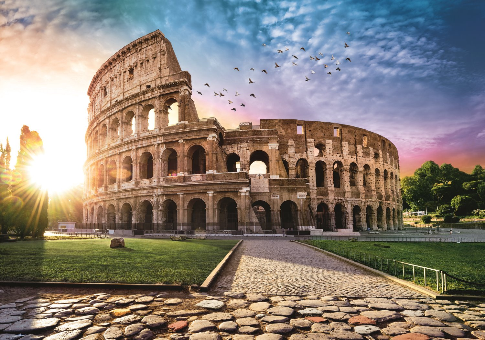

Koloseum
Amfiteatr Flawiuszów, inaczej Koloseum, to jedno ze szczytowych osiągnięć rzymskiej architektury, które powstało w okresie panowania dynastii Flawiuszów w latach 75-82 n. e. Jego budowa wynikała z przyczyn politycznych – zainicjował ją cesarz Wespazjan, który doszedł do władzy, wywołując pucz wojskowy. Ta rekreacyjna i widowiskowa budowla miała umożliwić mu zdobycie przychylności ludu rzymskiego oraz utrwalić panowanie uzurpatora. Koloseum było zamierzeniem na wielką skalę, o czym świadczą jego olbrzymie rozmiary, wszechstronne przeznaczenie i zakres oddziaływania. Budowlę skonstruowano na planie elipsy o długości 188 m i obwodzie ok. 520 m oraz nadano jej 48, 5 m wysokości. Przeznaczono ją na walki gladiatorów, polowania na dzikie zwierzęta oraz bitwy morskie, tzw. naumachie.
W centrum elipsoidalnego Koloseum znajdowała się arena, również w kształcie elipsy, oddzielona od widowni wysokim murem. Imponujące wymiary areny umożliwiały jednoczesny występ 3 tysięcy par gladiatorów, co daje wyobrażenie rozmachu brutalnych widowisk, które wzbudzały atawistyczne instynkty rzymskiego społeczeństwa i odwracały jego uwagę od realnych problemów oraz wadliwego systemu rządzenia. Wokół niej wznosiła się czteropiętrowa widownia, przedzielona szerokimi przejściami.
Potężne przesklepione galerie z miejscami dla widzów służyły jako ciągi komunikacyjne oraz schronienie przed deszczem. Dodatkowo dla ochrony przed deszczem i słońcem stosowano nieprzemakalny płócienny dach, rozciągany nad całym amfiteatrem, tzw. velum. Ponadto na czwartej kondygnacji pomiędzy filarami rozciągały się także bufety, szatnie i natryski. Pod areną umieszczono rozbudowane podziemia – głębokie sutereny, stanowiące skomplikowany układ pomieszczeń, tzw. hypogeum (z greckiego ‘podziemny’), wyposażone w mechanizmy transportujące na arenę klatki oraz służące do zalania jej wodą. Mieściły się w nich izby dla gladiatorów, rannych i zabitych uczestników igrzysk oraz klatki dla zwierząt.
Fasada Koloseum miała cztery kondygnacje – trzy dolne o podziałach arkadowych (umieszczona najniżej – w porządku toskańskim, środkowa – jońskim, górna – korynckim), czwarta to pas muru o podziałach pilastrowych w porządku korynckim. Osiemdziesiąt arkad przyziemia pełniło funkcję wejścia do gmachu. Wnętrze wyłożono murem i ozdobiono stiukiem, a w arkadach trzeciego i czwartego piętra ustawiono posągi. Natomiast do wzniesienia całej budowli użyto tufu i betonu, ściany zewnętrzne wykonując z twardszego trawertynu.
